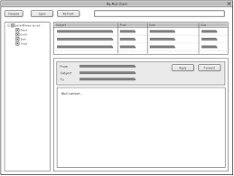

6. Wireframe
Mobile View
Desktop View

TechConnect Africa — This name represents a community-driven platform to connect African tech enthusiasts, startups, and professionals. The name was chosen to reflect the purpose of building a stronger digital ecosystem in Africa.
The purpose of this website is to provide African tech professionals and startups with a platform to: